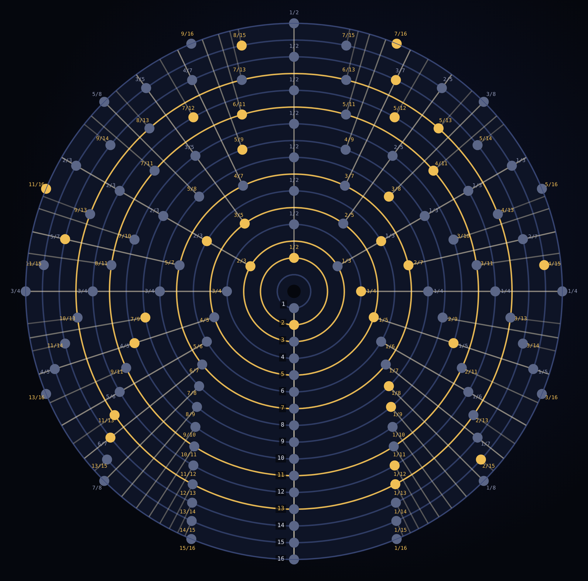
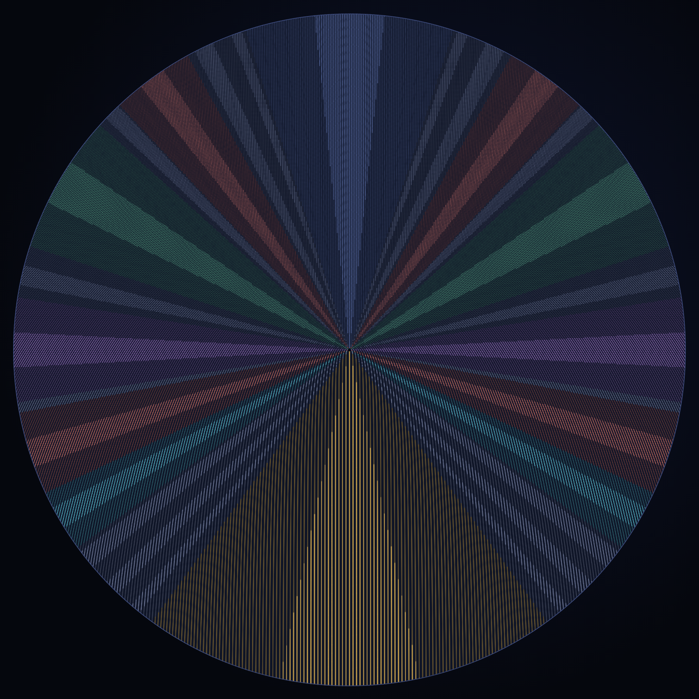
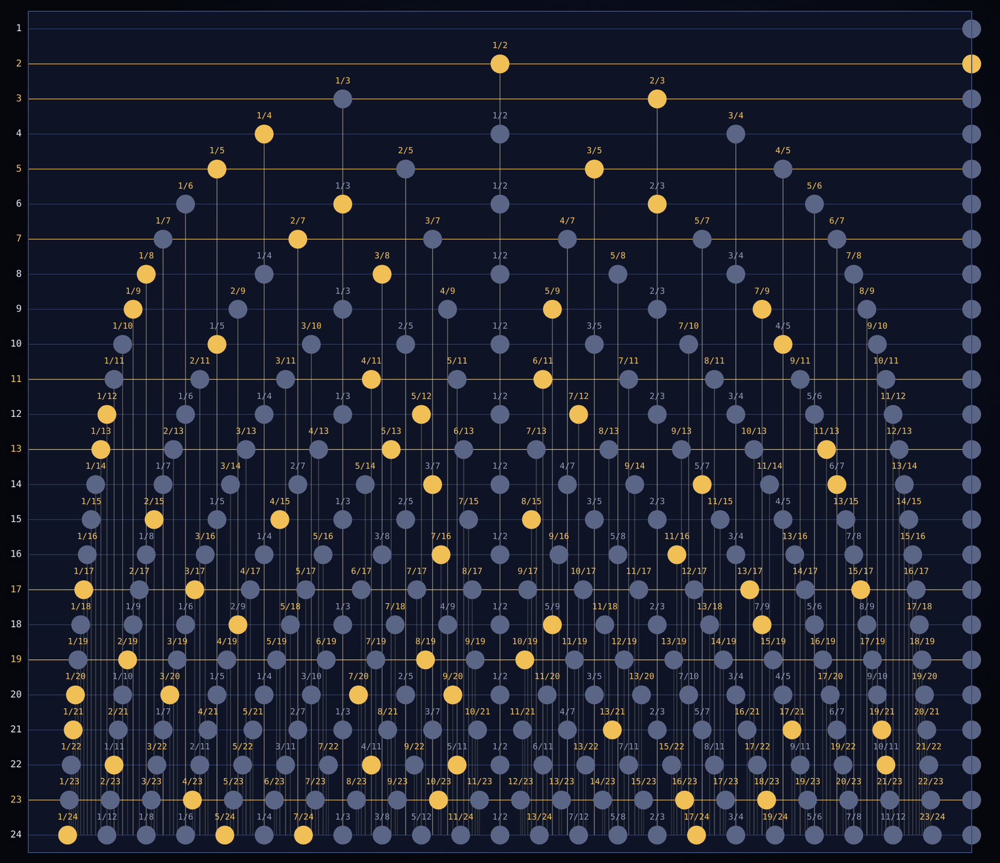

I Rolled the Number Line Onto a Wheel
Oct 7, 2026 · @obi
The itch
I rolled the counting numbers onto a wheel and watched ratio, divisibility and evenness turn into shapes you can see.
I'm a solar electrician, not a mathematician. I think in parts and motion, and I always want to know what moves what. Prime spirals bugged me for that reason: they show streaks, but every streak needs a story told after the fact.
So this isn't another prime spiral. It's the number line itself, wound onto a wheel by one rule. The primes are just the seats that geometry leaves open.
Everything below is either proven or checked by computer, and I've marked which. I've also marked what mathematicians already knew, because a lot of it they did.
The rule

Layer 1 holds the number 1, layer 2 holds the next two numbers, and every layer after that holds one more number than the last.
Each layer is a ring, and every tick on every ring is the same size. So each new ring has to be exactly one tick longer than the ring inside it. The wheel grows as it rolls, but the tick never changes.
Tick k of layer m sits k/m of the way around. The last number of every layer lands on the seam: 1, 3, 6, 10, 15, the triangular numbers.
Laid flat, the layers are the rows of Floyd's triangle (1 / 2 3 / 4 5 6), a classic warm-up in programming classes. The wheel just bends each row into a ring.
That's the whole construction. Nothing about primes goes in. Everything that shows up comes from counting and the shape of a circle.
Spokes and visits
From the third time the wheel comes back to a spoke, the number sitting there can't be prime.
Tick 1 of layer 2 sits half a turn around. So does tick 2 of layer 4, and tick 3 of layer 6. Same spot, different layers. That line is a spoke, and every spoke is a fraction.
The fraction a/b gets its first visit on layer b, its second on layer 2b, and its g-th visit on layer g × b. The number sitting at the g-th visit is:
x = g (g b² − b + 2a) / 2
The visit count g is built into the number, or half of g when g is even. So from visit 3 on, every number on every spoke is composite. Each spoke gets at most two shots at a prime: its first visit, and its second when b is odd.
That fixes how many seats each layer from 3 on can offer a prime: one for each fraction k/m already in lowest terms. Mathematicians call that count φ(m). On layers 6, 10, 14 and every fourth layer after, the first visits are all even, so the prime seats move to second visits. The count stays the same.
Status: proven, and checked on every tick through layer 800. Already known: the divisibility fact is written down in the Math::PlanePath documentation, for a way of listing fractions that Lance Fortnow described in 2004. The two-shots rule and the seat count follow from it in a line.
The slip law

Ratio isn't painted onto the wheel. It's how far each ring slips against the ring inside it.
Each new layer adds exactly one tick, spread evenly around the whole turn. So a tick a fraction f of the way around slips f of a tick against the layer below.
At the seam the slip is zero, and the layers stack in straight columns. At the half-turn the slip is half a tick, so the stack looks like brickwork. At a third of a turn, it lines up again every three layers.
At any fraction a/b, the stack lines up every b layers, and that realignment is the spoke. Near it, the ticks fall into straight rows running parallel to the spoke, 1/b of a tick apart. Where one spoke's grain meets the next, the rows clash and shimmer.
This is why the wheel doesn't spiral. In the famous polar plot of the primes, the arms come from near misses (44 radians is almost 7 turns). Near misses drift, so you get spirals that only straighten into rays from far away (3Blue1Brown explains it well).
On the wheel the angles are exact fractions, so the spokes never drift. Every spoke is straight at every zoom, and the picture looks the same at any scale.
Status: exact and elementary. It's a way of seeing, not a theorem.
Evenness and the balance
Evenness runs along a fixed axis through the wheel, and the first visits on every layer balance out to +1, −1 or 0.
Numbers alternate even and odd as you go around a layer. On every layer, the tick at the half-turn is even (on odd layers, the tick just before it). So the even/odd pattern is pinned to the half-turn axis, and the half-turn spoke holds twice the squares: 2, 8, 18, 32, 50.
Status: proven. It rests on an old fact: the triangular numbers run odd, odd, even, even, over and over.
Now the balance. Point an arrow from the hub to every first visit on a layer, all arrows the same length, and add them up. You always get +1, −1 or 0, pointing at the seam.
Prime layers always come out −1, and you can see why. The arrows of a whole layer are evenly spaced, so they cancel. On a prime layer every tick is a first visit except the one on the seam, so what's left is minus that one arrow.
That +1, −1 or 0 is the Möbius function, one of number theory's oldest tools. Keep a running total layer by layer and you get the Mertens function. The Riemann Hypothesis is equivalent to that total growing no faster than the square root of the layer count, allowing any tiny extra power.
So on the wheel, the Riemann Hypothesis becomes a question about balance. Does the running lean of the arrows stay within about the square root of how far you've rolled? Past layer 32, I found it never leans more than 0.57 times the square root, all the way to layer 10 million.
Mathematicians went much further long ago. Between ten thousand and 100 trillion, the worst lean is about 0.5706 times the square root (Kotnik and van de Lune, 2004).
Somewhere far beyond that it does poke past the square root itself, which is how the Mertens conjecture was disproved in 1985.
Status: classical. The arrows summing to the Möbius function is a known identity, and so is the link to the Riemann Hypothesis. The wheel shows them as one picture.
The drum

Shrink the tick instead of growing the wheel, and the same rule stands every fraction up as a straight column on a drum.
Keep every layer the same size, so the ticks on layer m sit 1/m of a turn apart. Stack the layers up a cylinder, one ring per layer, and roll it.
Now the fractions stand up straight. One half is a column that starts at layer 2 and picks up a tick every second layer. One third picks one up every third layer, and so on for every fraction.
The first tick of each layer sweeps toward the seam as the layers climb, because 1/m keeps shrinking. Around each column, near misses curve in from both sides, closer every layer, never touching.
The wheel and the drum hold the same numbers in the same order. The wheel keeps the tick fixed and shows you the slip; the drum keeps the turn fixed and shows you the fractions. Near misses that run straight beside a spoke on the wheel curve in toward its column on the drum.
Status: exact. Another way of seeing, not a theorem.
The multiplexer
There's a machine hiding in the rule. Each lap is a switch with one slot per tick, and placing a number on a lap computes its remainder — the geometry does the division, and the answer is a position.
A spoke is a channel that survives the frame getting longer: channel a/b reopens every b laps. And the two-shots rule becomes a capacity statement a switch engineer would recognize: no channel carries more than two primes, then composites only. Channel 2/5 carries 2 and 47, and from its third visit on every number is composite. Channel 3/7's second visit is 97 — the last prime that channel can ever carry.
Lehmer built sieve machines from fixed rings in the 1920s, and the Chinese remainder theorem stacks fixed moduli in parallel. This is that machine with one change: the frame length is the lap index, so the growth of the frame enumerates every modulus at once, and no ring is ever built twice.
A multiplexer routes, but it doesn't decode. Which dots are prime is still the wall below.
Status: exact. Another way of seeing — and the globe page has the channel-and-lap panel that draws it directly.
The wall, and the open question
The wheel tells you how many primes to expect and where to look, but not which seats will hold them. That's the same wall every prime method hits.
I tried a knockout test: hide a layer's primes, then ask which smaller wheels the geometry needs to find them again. Only about half the wheels below the square root get used. That turns out to be true of any short stretch of numbers, so it's no gift of the wheel. And the biggest wheel needed climbs to 98% of the square root by layer 3,000. The wheel shows the sieve's boundary clearly, but it doesn't move it.
The seam shows the same thing in miniature. The last tick of every layer holds a triangular number, so it's composite from layer 3 on. The first tick of every layer is a lane where primes run about twice as thick as chance.
The reason is that many wheels can never block it. Any wheel whose size leaves 3, 5 or 6 when divided by 7 never lands there: 3, 5, 13, 17, 19, 31 and on.
Counting its open seats predicts 9,836 primes up to layer 100,000. The real count is 9,863; random numbers that size would give about 4,986. So the wheel predicts counts beautifully, but it can't point at the seat.
That story is known, too. The first ticks are the lazy caterer numbers (OEIS A000124), and their primes are listed and conjectured to go on forever (OEIS A055469). The open-seat prediction is the standard one, from the Bateman–Horn conjecture.
The open question: can a whole layer come up empty? Every prime on a layer sits on one of its φ(m) seats, so an empty layer means every seat is composite at once.
Nobody knows. It's an open conjecture that there's always a prime between two neighboring triangular numbers (OEIS A066888, John W. Nicholson, 2011). Its square-grid cousin, Sierpiński's hypothesis from 1958, is open too.
The closest call I found is the run of 13 composites from 114 to 126, nearly as wide as layer 15 itself. From layer 100 to layer 10,000, no run of composites is even 30% as wide as its layer. The layers keep getting safer, but that's a trend, not a proof.
What's known, what's new
We didn't discover new facts. We found one skeleton they all grow on, from a single counting rule, where they show up as parts of the same machine.
The skeleton is also forced. Count in order onto the evenly spaced rings mathematicians have used since Gauss, and this wheel is the only possible result. Change any piece of the rule and some of the facts break.
What the wheel shows
| What the wheel shows | Status | Already known from |
|---|---|---|
| The layers are the rows of Floyd's triangle | Classical | Floyd's triangle |
| The g-th visit to a spoke is divisible by g (or g/2) | Proven, already known | Math::PlanePath docs, after Fortnow 2004 |
| At most two primes per spoke; φ(m) prime seats per layer | Proven, checked to layer 800 | Not found written down, but one line from the row above |
| Evenness pinned to the half-turn | Proven | The parity of triangular numbers, an old fact |
| Each layer's balance is the Möbius function | Classical | Möbius function |
| The running balance and the Riemann Hypothesis | Classical | Mertens function; Kotnik and van de Lune 2004 |
| Ratio as slip, straight spokes at every scale, the drum | A way of seeing | Compare 3Blue1Brown on prime spirals |
| The wheel as a growing-frame multiplexer | A way of seeing | Lehmer's sieve machines; the new piece is the growing frame |
| The first tick of each layer is twice as prime-rich | Known | OEIS A000124, OEIS A055469 |
| Does every layer hold a prime? | Open | OEIS A066888 (Nicholson, 2011) |
The rule is simple enough to hand to anyone, or to a machine. Next I want to train a small network on wheel coordinates and see what geometry it builds on its own.
Play with it, and check every number above:
- The wheel: https://ostoe.com/prime-tread-wheel/
- Problem Wheels (Collatz, Riemann, Goldbach, twin primes, prime races): https://ostoe.com/prime-tread-wheel/problem-wheels.html
- The math globe (with the multiplexer panel): https://ostoe.com/prime-tread-wheel/globe.html
- Code and the script that reproduces every number here: https://github.com/Cosmolalia/prime-tread-wheel
- The claims registry (established claims + the filed gap): https://ostoe.com/
If you know where any of this is already written down, or you can push it somewhere new, tell me. That's why I'm putting it out.
X thread
Eight posts, each under 250 characters, with the picture to pair each one with. Post 8 gets the link to the wheel.
| # | Post | Pair it with |
|---|---|---|
| 1 | I rolled the counting numbers onto a wheel. One rule: every layer is one tick longer than the layer inside it, and the tick never changes size. Ratio, divisibility and evenness came out as shapes you can see. |  |
| 2 | Every spoke is a fraction. One half gets visited on layers 2, 4, 6 and on. From the third visit on, the number sitting there is always composite. So each spoke gets at most two shots at a prime, and every layer has a fixed count of prime seats. |  |
| 3 | Why the spokes are there: each new layer adds one tick, spread around the whole turn. A tick at fraction f slips f of a tick against the layer below. At a/b the stack lines up every b layers. Ratio isn't painted on. It's the slip. |  |
| 4 | So no spirals turning into rays, like in the famous prime plots. Those come from near misses (44 radians is almost 7 turns). Here every angle is an exact fraction, so every spoke is straight at every zoom. | Text only |
| 5 | Shrink the tick instead of growing the wheel and you get a drum. Every fraction stands up as a straight column, and near misses curve in toward it. Same numbers, same order. The wheel shows the slip; the drum shows the fractions. | |
| 6 | Put an arrow at each first visit on a layer and add them up: always +1, −1 or 0. That's the Möbius function. Keep a running total and the Riemann Hypothesis becomes a question about how far the wheel can lean. |  |
| 7 | Honest scorecard: we didn't discover new facts. We found one skeleton they all grow on, from a single counting rule. Change any piece of the rule and facts break. Sources are in the post. | The link to the Substack post |
| 8 | The open question it sharpens: can a whole layer come up empty, every prime seat composite at once? Nobody knows. Play with the wheel and check every number yourself: https://ostoe.com/prime-tread-wheel/ | The wheel's link card |